This library implements different methods for distributed FFT computation on heterogeneous GPU Systems.
In general, we assume that the input data is aligned as [z][y][x] (such that the data is continuous in z-direction). The various implementations can be grouped into:
- Slab_Decomposition
Here the global input data 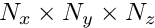 is split in x-direction. Therefore, we assume that each process starts with input data of size 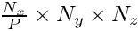.
The default procedure for slab decomposition is the following:
- Input:
- Compute the 2D-FFT in y- and z-direction: 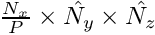
- Redistribute: Each node has 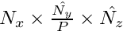
- Compute the remaining 1D-FFT in x-direction: 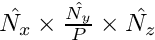
- Pencil_Decomposition
Here the global input data is split in x- and y-direction. Therefore, we assume that each process starts with input data of size 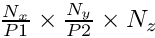.
The default procedure for pencil decomposition is the following:
- Input:
- Compute the 1D-FFT in z-direction: 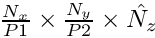
- Redistribute: Each node has 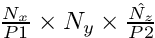
- Compute the 1D-FFT in y-direction: 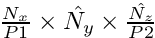
- Redistribute: Each node has 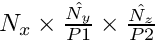
- Compute the 1D-FFT in x-direction: 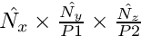
All methods implement MPIcuFFT.